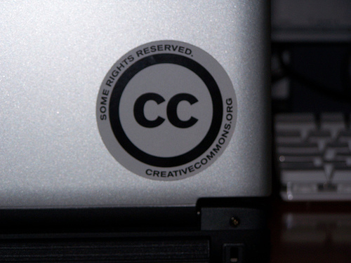

Los trabajos finales realizados por los profesores en los cursos en línea están generando una gran cantidad de recursos educativos de diferentes tipos: webquest, miniquest, caza tesoros, JClic, Hotpotatoes, unidades didácticas, artículos de divulgación científica, proyectos TIC, etc. Conforme se van realizando ediciones de los cursos, esta biblioteca de recursos se está incrementando y si los compartimos, nos beneficiaríamos todos.
|  |
| Pegatinas Creative Commons. |
Una posibilidad es, tal y como se ha comentado en las sesiones presenciales, que los trabajos realizados durante el curso serán alojados en un sitio web para su acceso público. Con el fin de proteger los derechos de autor, reconocidos por la ley de propiedad intelectual, se recomienda que los trabajos sean publicados bajo una licencia "Reconocimiento-No comercial-Compartir bajo la misma licencia 3.0 España".
Para ello es necesario que los trabajos sean originales y que los elementos multimedia incluidos respeten los derechos de autor.
Tomado de los cursos en línea de la Consejería de Educación de la Comunidad de Madrid. elaborado originalmente por: